DK Business Solutions
DK AI Connector
Connect your Odoo to DK AI and ask your business questions in plain English.
DK AI Connector links your Odoo database to a DK AI workspace with a one-time pairing code. Once paired, DK AI reads your sales, purchasing, inventory, invoicing and CRM data through a read-only API to power dashboards, plain-English answers and workflows. Nothing in Odoo is created, changed or deleted.
Read-only accessOne-time pairing codeAdmin onlyRevoke any time
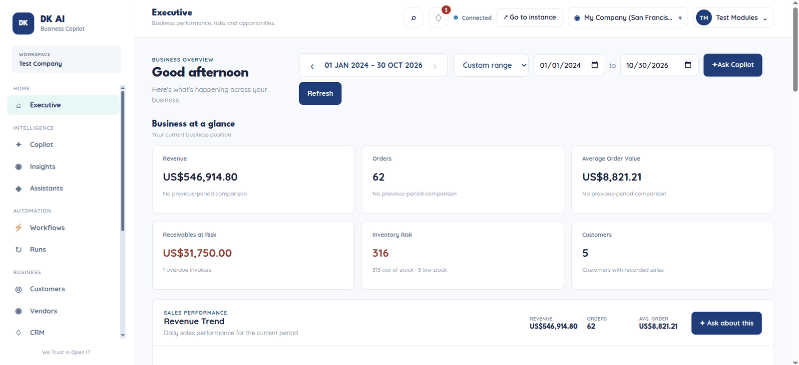
The DK AI Executive dashboard, built from your live Odoo data.
What you get once connected
The module is the secure link. DK AI turns your Odoo data into answers.
Dashboards
Executive, Sales, Customers, Vendors, CRM, Purchase, Products, Inventory, Invoices and Accounting, all with one date range you can step through by day, month or year.
Ask in plain English
An Ask panel on every page. Try “Who is my top customer?” or “Which invoices are overdue?” and get an answer worked out from your Odoo data.
Workflows
Run checks on demand, such as the executive morning briefing, overdue invoice monitor, low stock monitor and daily sales summary. They only read data.
How it works in 3 steps
Pairing takes about two minutes.
1Install the module
In Odoo, open Apps, search for DK AI Connector and click Activate.
A new DK AI menu appears for Odoo administrators.
2Generate a pairing code
Open DK AI > Configuration > DK AI Connection. Check the DK AI URL and click Generate Pairing Code.
The status changes to Pending and a one-time code appears. It expires after 10 minutes.
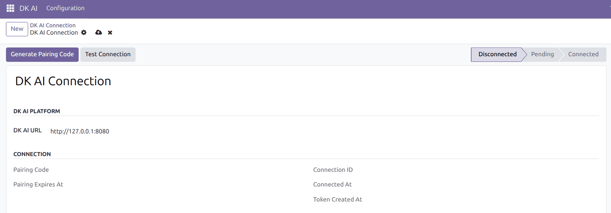
Before: status Disconnected.
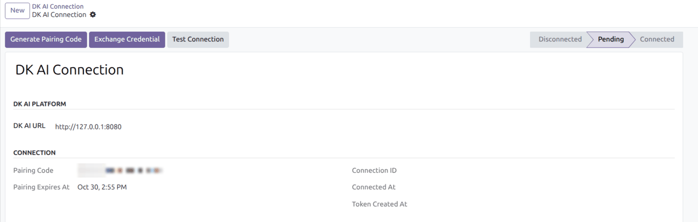
After: status Pending, with your one-time code.
3Enter the code in DK AI
Paste the code into DK AI and click Connect Odoo. You can do this right after you register, or later from Settings > Odoo Connections.
Back in Odoo the status changes to Connected. If it still shows Pending, click Exchange Credential and then Test Connection.
To disconnect at any time, click Revoke Connection. The access token is invalidated immediately.
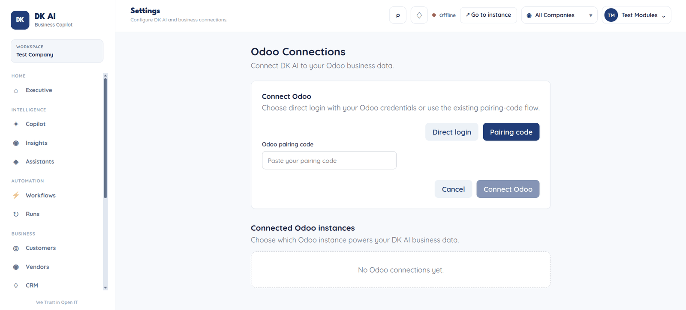
In DK AI: paste the code and click Connect Odoo.
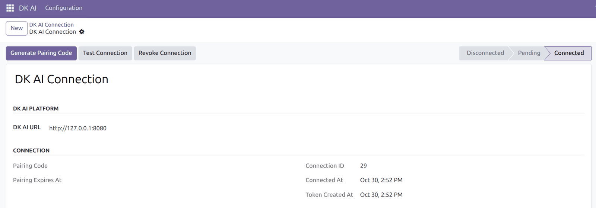
In Odoo: status Connected, with Test Connection and Revoke Connection.
Two ways to connect, now or later
You choose the method when you register, and you can skip and connect later.
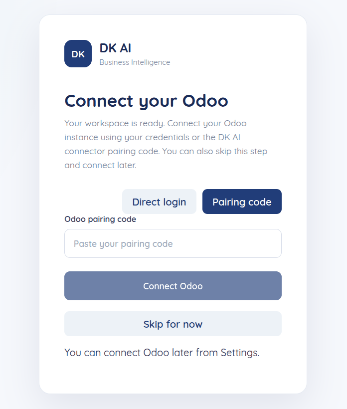
Right after you register, connect straight away or choose Skip for now. You can connect later from Settings.
Pairing code Recommended
Uses this module. Your Odoo password is never shared with DK AI: the connection uses a revocable token, and the code works once and expires after 10 minutes.
Direct login no module needed
Enter your Odoo URL, database name, username and password. DK AI stores them encrypted. Use an HTTPS address, and we suggest a dedicated Odoo user with read-only access. This is the option for Odoo Online, which cannot install custom apps.
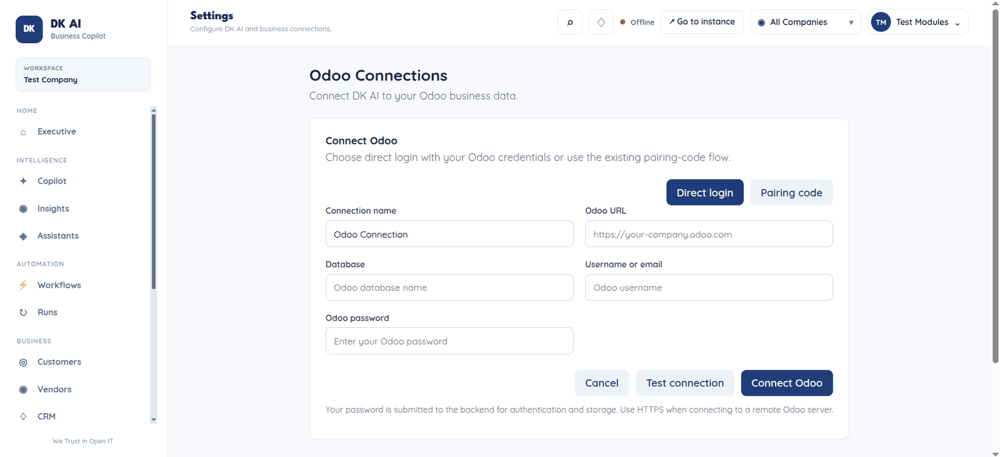
Direct login: connection name, Odoo URL, database, username and password, with a Test connection button.
See your business in one place
Everything below is read live from your Odoo.
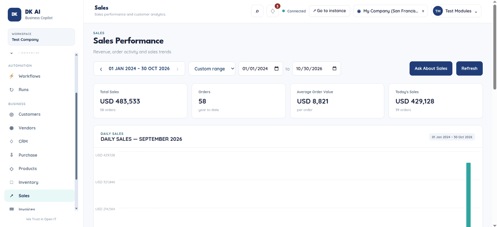
Sales: KPIs, trends, top customers and salespeople.
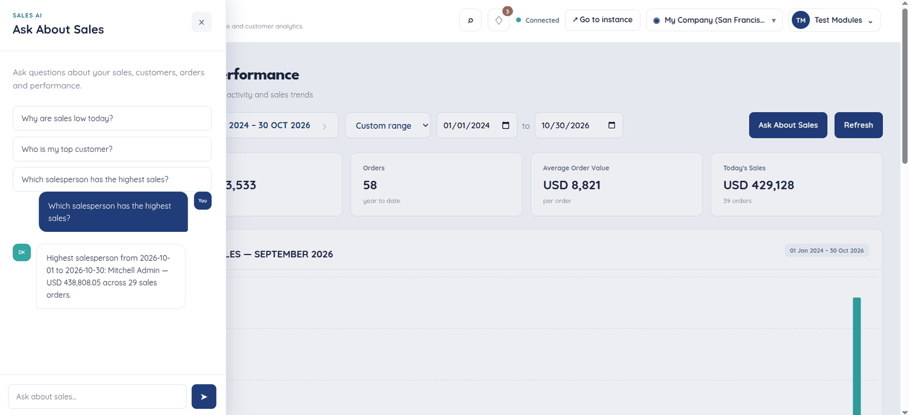
Ask: a plain-English question, answered from your data.
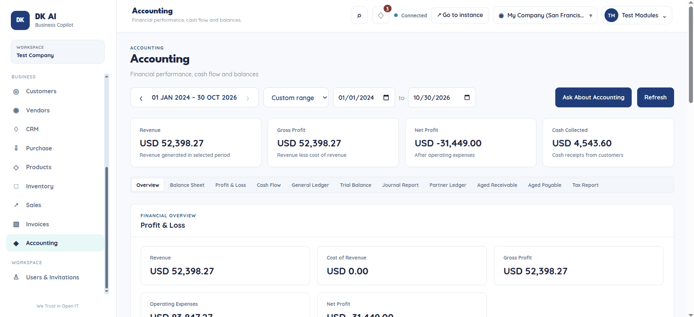
Accounting: profit and loss, balance sheet, cash flow and ageing.
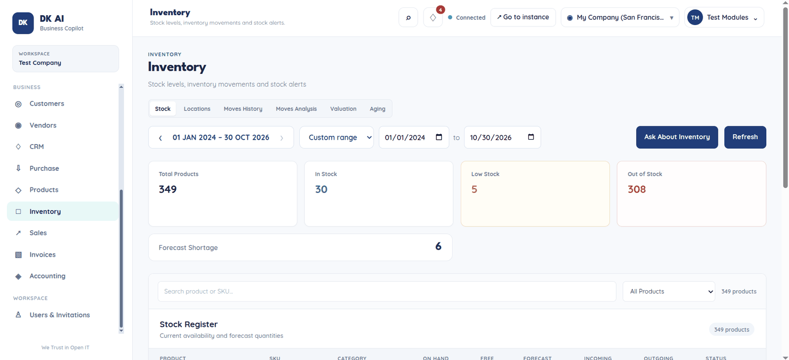
Inventory: stock levels, locations, movements and alerts.
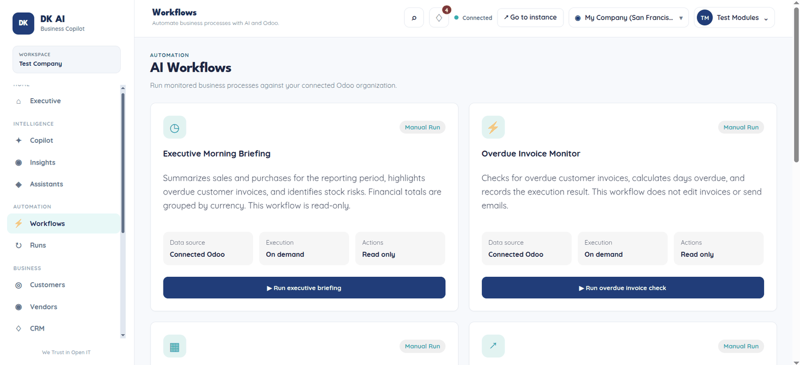
Workflows: on-demand checks that only read data.
Also included: Customers, Vendors, CRM, Purchase, Products and Invoices dashboards.
Security and control
You decide what DK AI can see, and you can switch it off at any time.
Read-only
The API only reads data. It never creates, changes or deletes records in Odoo, and it does not send emails or messages.
Approved models only
The API refuses any Odoo model that is not on its approved list of business models (sales, purchasing, inventory, invoicing, CRM and related data).
Admin only
Only Odoo administrators can see the DK AI menu, the connection and its token.
One-time code
A pairing code works once and expires after 10 minutes.
Revocable
Click Revoke Connection to disconnect. The access token stops working immediately.
Transparent
DK AI reads data live when you load a page or ask a question. It keeps your AI conversation history and workflow results, as described in the DK AI privacy policy.
- Odoo: version 18.0 (use the version selector on this page for other releases). Works on Odoo.sh and self-hosted Odoo. Odoo Online does not allow custom apps, so use Direct login there.
- Network: your Odoo server needs to be reachable over HTTPS from DK AI, and able to reach the DK AI URL shown in the connection form.
- Python: the
requests library, which is installed with most Odoo servers. - A DK AI workspace: this module is the connector. The dashboards, Ask panel and workflows run in DK AI.
- License: LGPL-3.
Questions, a bug or a feature request? Contact DK Business Solutions at dishonkadoh.com or write to dishon.kadoh@gmail.com. We reply within one working day.
DK AI is an independent product of DK Business Solutions and is not affiliated with Odoo S.A. Odoo is a trademark of Odoo S.A.